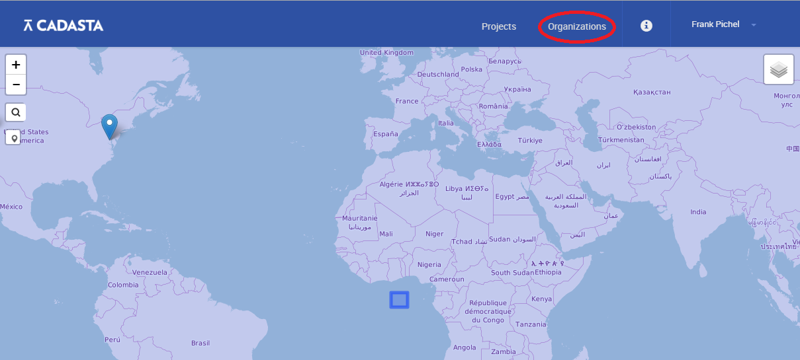
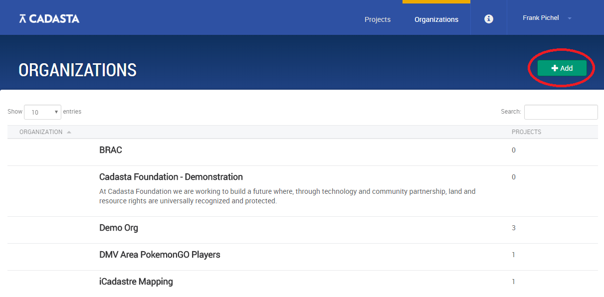

Organizations
As a first time user, your priority may be to set up an organizational account to manage projects, users and data collection forms.
To create a new organization:
On the project index page select Organizations.

At this page you will be able to view public projects, as well as add your own by clicking Add.

After selecting Add within the Organizations page, you will need to fill out relevant details about the organization.
Congratulations! You’ve established an organization within the Cadasta platform!